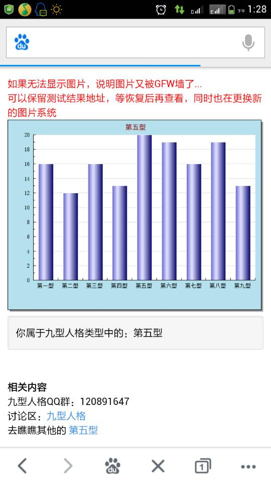
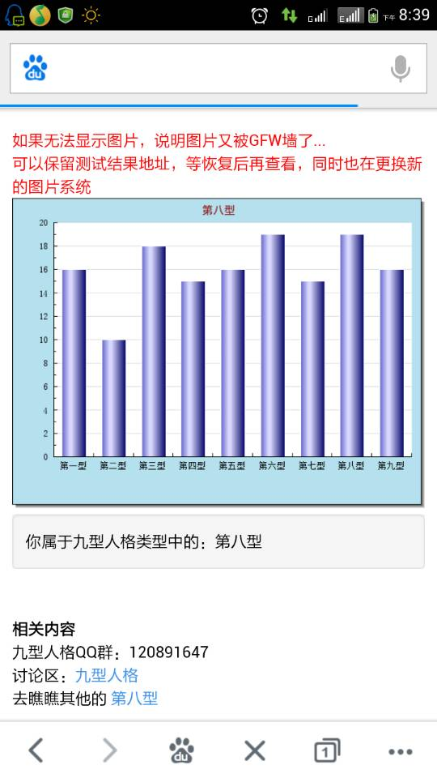

Conversation with 81184027 at Sat 23 Aug 2014 04:29:51 PM CST on 154115835 (webqq)
(04:32:57 PM) 3678287692: 就此时间来看，我觉得还是不可能
(04:32:57 PM) 素衣: 就此时间来看，我觉得还是不可能
(04:30:10 PM) 光: 嗯
(04:33:24 PM) 素衣: 应该是为近来的是做铺垫
(04:30:25 PM) 光: 这个很早我收集的材料
(04:30:32 PM) 光: 不是为今天准备的
(04:33:47 PM) 小绵羊: !也可能的
(04:30:57 PM) 光: 只是拿出来给大家看一下他们是怎么在媒体包装自己的
(04:31:15 PM) 光: 以此来排除大家对国庆可能大闹的忧虑
(04:31:29 PM) 光: 在我看应该是拉拉横幅示威就差不多了
(04:34:49 PM) 素衣: 12年的严打，香港媒体应该不可能在明知是邪教而采访
(04:35:07 PM) 素衣: 我觉得这应该是给教民洗脑用的
(04:31:58 PM) 光: 你对香港媒体很了解么
(04:35:51 PM) 素衣: 个人意见
(04:32:49 PM) 光: 你一不会翻墙
(04:32:55 PM) 光: 二不了解香港媒体
(04:33:03 PM) 光: 你的这些个人建议
(04:33:10 PM) 光: 没有参考价值啊
(04:33:28 PM) 光: http://www.cgner.org/documents/ELC_18QnA.pdf
(04:33:31 PM) 光: 这是出处
(04:34:03 PM) 光: http://www.cgner.org/index.php/hk/
(04:34:12 PM) 光: 我截个图给你看看吧
(04:35:23 PM) lost message from #206278 to #206279
(04:38:34 PM) 素衣: 不用了
(04:35:23 PM) lost message from #206281 to #206281
(04:38:34 PM) 上善若水: 小兔子要上床睡觉了；它紧紧抓著大兔子的长耳朵，要大兔子好好地听它说。
“猜猜我有多爱你？”小兔子问。
“噢！我大概猜不出来。”大兔子笑笑地说。
“我爱你这么多。”小兔子把手臂张开，开得不能再开。
大兔子有双更长的手臂，它张开来一比，说：“可是，我爱你这么多。”
小兔子动动右耳，想：嗯，这真的很多。
“我爱你，像我举的这么高，高得不能再高。”小兔子说，双臂用力往上撑举。
“我爱你，像我举的这么高，高得不能再高。”大兔子也说。 ??这真的很高，小兔子想：希望我的手臂可以像大兔子一样。
小兔子又有个好主意，它把脚顶在树干上倒立了起来。他说：“我爱你到我的脚趾头这么多。”
大兔子一把抓起小兔子的手，将它抛起来，飞得比它的头还高，说：“我爱你到你的脚趾头这么多。”
小兔子笑了起来，说：“我爱你像我跳得那么高，高得不能再高。”它跳过来又跳过去。
大兔子笑著说：“可是，我爱你，像我跳得这么高，高得不能再高。”
他往上一跳，耳朵都碰到树枝了。
跳得真高哇——小兔子想——真希望我也可以跳得像它一样高。
小兔子大叫：“我爱你，一直到过了小路，在远远的河那边。”
大兔子说：“我爱你，一直到过了小河，越过山的那一边。”
小兔子想，那真的好远。它揉揉红红的两眼，开始困了，想不出来了；它抬头看着树丛后面那一大片的黑夜，觉得再也没有任何东西比天空更远的了。??
大兔子轻轻抱起频频打著呵欠的小兔子，小兔子闭上了眼睛，在进入梦乡前，喃喃说：“我爱你，从这里一直到月亮。”
“噢！那么远，”大兔子说。“真的非常远、非常远。”
大兔子轻轻将小兔子放到叶子铺成的床上，低下头来，亲亲它，祝它晚安。
然后，大兔子躺在小兔子的旁边，小声地微笑著说：“我爱你，从这里一直到月亮，再……绕回来。”
(04:35:45 PM) 光: http://imagebin.org/317983
(04:35:50 PM) 光: 这么一个网站
(04:37:52 PM) 光: 據山東省烟台市中級人民法院於2014年8月15日之公告，有關招遠528命案，其中涉案者張帆、張立冬、呂迎春、張航、張巧聯等5人被控故意殺人罪，當中呂迎春、張帆及張立冬三人，更被多控一項“利用邪教組織破壞法律實施”罪名。而張立冬之幼子張某，因未成年而沒有提案起訴。(詳參：http://ytzy.sdcourt.gov.cn/ytzy/389456/389434/843091/index.html)
此案源於本年5月28日晚約9時許，張立冬等6人於山東招遠市羅峰路麥當奴餐廳內傳教時，向在座的人索取電話號碼，死者吳某因拒而被認定為“惡魔、邪靈”，遂被毆打致死。
事件轟動全國，而香港的全能神教更於其YouTube頻道內，發佈多段製作認真之回應短片。其中包括由港人製作，題為“揭露真相《中共制造招遠殺人案背後隱藏的陰謀》”之視頻。其內容引用網絡流言作證據，指官方藉媒體編造謊言，大肆抹黑全能神教。甚至反指中共憑空捏造，否認犯罪者為其信徒。
此案將於8月21日開庭，相信經過法院審理後，將發佈更多案情細節，公眾才能對此事件有更深的瞭解，才能更準確地分析邪教元素在此事件的影響。
(04:37:59 PM) 光: http://www.cgner.org/index.php/hk/news/cultactivity/177-528-5
(04:38:09 PM) 光: 我其实很久不谈这个问题了
(04:38:17 PM) 光: 如果只是八卦性的议论没啥意义的
(04:38:36 PM) lost message from #206289 to #206290
(04:41:47 PM) 小绵羊: :)
(04:38:41 PM) 光: :face14:
(04:42:07 PM) 素衣: 八卦性质的不用谈了
(04:40:02 PM) 光: 大多人的眼球就是跟着八卦走，可以理解
(04:43:25 PM) 小绵羊: 香港大公报敢公开评论温，周，江，等，我很看好香港的言论自由!
(04:40:43 PM) 光: 我个人对沉淀之后的东西更感兴趣
(04:44:04 PM) 小绵羊: 但大陆买不到大公报的!
(04:41:00 PM) 光: 嗯
(04:44:59 PM) 小绵羊: 公道自在人心!
(04:47:18 PM) 小绵羊: 天网恢恢，疏而不漏，不能理解为法网恢恢，疏而不漏!
(04:44:36 PM) 光: 中国不是法制社会
(04:44:40 PM) 光: 法律漏洞很多
(04:48:50 PM) 小绵羊: 又涉及今年国庆召开的"法治中国"大会!
(04:49:19 PM) 福建-福州&水浒: 嗯
(04:49:46 PM) 小绵羊: 估计有反恐法，反贪法，反邪法的产生!
(04:49:55 PM) 福建-福州&水浒: 那个十八问去年确实在全能神内部教义里有提到
(04:50:47 PM) 福建-福州&水浒: 有一篇是教信徒如何应对新闻媒体的采访内容
(04:52:00 PM) 小绵羊: 全能早就有应对的铺路细则!
(04:52:12 PM) 福建-福州&水浒: @素衣 香港政府没有把全能神当做邪教，这一点你得了解香港的法律
(04:52:32 PM) 小绵羊: :)
(04:52:54 PM) 福建-福州&水浒: 更何况香港宗教也只是把全能神称为异端教派
(04:53:36 PM) 福建-福州&水浒: 任何信仰基督宗教的团体都是以《圣经》作为信徒生活的准则
(04:54:06 PM) 小绵羊: 人性化的称呼"异端"!大陆叫邪!
(04:54:13 PM) 福建-福州&水浒: 对
(04:54:20 PM) 福建-福州&水浒: 区别就在么
(04:54:33 PM) 福建-福州&水浒: 我一般叫全能组织
(04:54:59 PM) 小绵羊: 要尊重别人(的信仰)!
(04:55:05 PM) 福建-福州&水浒: 因为他们是每一个个体，而组成的聚会团体
(04:55:25 PM) 小绵羊: 是人!
(04:55:29 PM) 福建-福州&水浒: 只有先尊重，更得要了解他们的信仰
(04:55:50 PM) 福建-福州&水浒: 在我眼里他们是异端
(04:56:12 PM) 小绵羊: 妓女也有性爱与家庭!
(04:56:59 PM) 福建-福州&水浒: 而需了解他们，就更必须了解基督宗教，与政治体制，主义信仰，宗教法律
(04:57:15 PM) 福建-福州&水浒: 需要了解的东西太多了
(04:57:21 PM) 小绵羊: 异端组织也是—个组织!
(04:57:24 PM) 福建-福州&水浒: 我们的网络是封闭的，
(04:54:20 PM) 光: 嗯
(04:57:34 PM) 福建-福州&水浒: 不要再自我封闭了
(04:54:44 PM) 光: 其实基督教组织目前关注的是另一个组织
(04:58:01 PM) 小绵羊: :强:
(04:54:56 PM) 光: 韩国教会中的张大卫
(04:58:18 PM) 小绵羊: ?
(04:58:33 PM) 小绵羊: 张?
(04:55:27 PM) 光: 張大衛（David Jang, 1949-）教派無論在亞洲或北美，到處都惹起爭議。1就算張大衛公開的言論與正統信仰無異，他本人亦從未公開宣稱自己是「再臨基督」（The Second Coming Christ），但多年來，其教派各地的離教者卻成了有力的反證。究竟是這些跟隨者「不約而同地」領會錯誤？還是張大衛的作風是與過去所有「擺明車馬」的異端教派迥別不同？表面是「明修棧道」、內裡卻是「暗渡陳倉」？張大衛何解要處心積累、用隱晦方式，令人撲朔迷離？
(04:59:14 PM) 小绵羊: 方不是刚去访问韩了吗?
(04:56:10 PM) 光: 張大衛（David Jang, 1949-）教派無論在亞洲或北美，到處都惹起爭議。1就算張大衛公開的言論與正統信仰無異，他本人亦從未公開宣稱自己是「再臨基督」（The Second Coming Christ），但多年來，其教派各地的離教者卻成了有力的反證。究竟是這些跟隨者「不約而同地」領會錯誤？還是張大衛的作風是與過去所有「擺明車馬」的異端教派迥別不同？表面是「明修棧道」、內裡卻是「暗渡陳倉」？張大衛何解要處心積累、用隱晦方式，令人撲朔迷離？
張大衛的隱晦，筆者有理由相信是他在文鮮明統一教（Sun Myung Moon’s Unification Church）逾三十年來學會了的生存及經營之道。打從一九六七年張大衛加入了同屬韓國背景的文鮮明統一教派開始，至一九七五年二月在由文鮮明主持證婚的一千八百對合同婚禮中結婚。韓國基督教報刊News'n'Joy在其《教會和信仰》報道：當時若想以合同結婚儀式結婚，需要相信文鮮明是再臨救主，並具備加入統一教三年以上資格，還要經過審查程序。於二○○二年四月發行的《鮮文大學三十年史記》頁134中記載：「張在亨（Jang Jae-Hyung即張大衛）將自己的房屋出售用以資助建校，確實是建立鮮文大學（Sun Moon University）的功臣。」無論是任巡迴佈道團長、到處為統一教植堂、在成和神學院（Shung Hwa Theological Seminary）任學生處長及發展委員會主任、再把成和神學院籌辦為鮮文大學，直到一九九八年離任。2無論由青少年到中年、無論結婚或事業，他都在統一教中度過悠長的卅一年，深受統一教影響。然而，離開統一教之後，張大衛從沒有公開指正文鮮明或統一教的異端錯謬。雖然他個人已經相當低調、謹慎、隱晦地經營其教派，但明眼人仍可處處看到統一教文鮮明的影子，甚至認為張大衛更懂得「去蕪存菁」！3筆者試列舉要點如下：
張大衛：文鮮明的影子
一、在傳教對象上，張大衛教派與統一教都主力於大學生的工作；張大衛教派更集中於大學一年級新生群中，吸引那些孤身離家、初踏大學校園的幼嫩心靈盡快投入「愛心轟炸」的教派中。
二、兩教派均設立Centre，鼓勵教徒群居，過公社式刻苦生活。
三、無論受訓或傳教，兩教派都採用密集模式（四十天開荒傳道、傳四十個道）；張大衛教徒更被規定要每天聽道三小時、講道三小時、傳道三小時，共佔去九小時，何來時間上大學的課及做作業？教徒們每天均睡眠不足，久而久之，難怪大學生的反省及分辨能力全被削弱掉，以致更容易接受他們似是而非的解經方式，及張大衛或文鮮明是再臨主的日子計算方法。4
四、文鮮明是公然地宣稱自己是再臨基督，因這涉及明顯的異端教理；張大衛則「聰明地」採用間接、隱晦的方式，引導跟隨者宣認他是再臨基督，而他自己就可以理直氣壯地公然否認一切。
五、文鮮明一九五四年創立統一教，一九五七年即出版《原理講論》或《神聖原則》或《統一原理》（Exposition of the Divine Principle或Divine Principle），把統一教的教義「明刀明槍」地陳列於世人面前；但張大衛卻選擇隱藏於「無間道」中，一方面盡量拉攏基督教圈中福音派領袖作顧問、作夥伴，又把他們受訪的內容或文章刊登於其網頁上，間接作了其教派「代言人」，另一方面則極盡所能地封鎖自己的教導不准外泄，這樣，若是被指出有錯，都是跟隨者聽錯、記錯、或弄錯了。
六、兩教派均把「說謊」合理化。統一教明言要用欺騙方法把屬世界的東西從撒但手中奪回來，「歸還」給統一教教會；張大衛教派則以拓展神國、保護教會為前提、指示教徒「說謊」是正確的做法。若非真正脫離這類教派，怎會說出全部的真話？
七、文鮮明是公然地、高調地搞萬人配婚；張大衛則謹慎地、低調地搞祕密配婚，更結合差遣新人，立刻領受使徒使命，從此展開宣教人生。5
八、兩派教徒都被要求超能力捐獻。文鮮明發動教徒為教派到處賣花、賣參茶等；而張大衛更令教徒作教派眾多企業的廉價勞工，甚至無償工人。
九、兩教派都不僅重視「救贖使命」（領人入教），亦很會搞「文化使命」。文鮮明在不同國家出版當地報紙雜誌，一九八二年更創辦《華盛頓時報》（The Washington Times），至今已成了美、日、韓極右勢力的宣傳機器；6張大衛則善用網絡等多元媒體，更能幅蓋全球，諸如：《基督郵報》（Christian Post）、7《基督新報》或《基督日報》（Gospel Herald）、8《福音時報》（Gospel Times）、9《基督時代／福音網》（Crossmap）、10萬銳科／萬邦通科技有限公司（Verecom）、11IB Spot網絡設計公司、12Deographics網絡設計公司、12Jubilee Mission音樂事工、14BREATHEcast音樂事工、15Goodnewsline多媒體事工、16聖經門（Bible Portal）17等等。
十、兩教派更突破傳統教會只講靈性的框框，大搞「經濟使命」。以上世紀八十年代為例，統一教從美國的收入為每年二千萬美元，來自日本的收入是一億二千二百萬美元，來自韓國的則有每年一千萬的進賬，多屬統一教旗下的統一企業集團的收益。一九九三年的一份調查顯示，文鮮明在全世界控制的商業資產為一百億美元；18張大衛於一九九二年建立的偉仁大學（Olivet University），二十年來已發展有多個附屬的事工和互聯網企業，正欲購入美國最大且最著名的基督徒會議中心之一、座落在新墨西哥州佔地近二千一百英畝的格洛列塔會議中心（Glorieta Conference Center），其經濟實力可見一斑。
十一、張大衛稱「救贖使命＋文化使命＋經濟使命」為靈魂體三元共同體，全方位建立地上的大衛王國；文鮮明更野心地走全球化、左右美國政壇、堅持以再臨基督姿態、利用和平為口號、企圖統一世界為終身職志。19本文脫稿時，九十二歲的他，剛因肺炎併發症病逝，須靠兒子文亨進（Hyung Jin Moon）接棒圓夢矣。20
無論統一教如何財雄勢大、舉足輕重，仍因被定性為異端，到處被驅逐出境或被拒入境（英國、新加坡、台灣、保加利亞等地）21，儼如過街老鼠。若不願走統一教文鮮明遺臭萬年的舊路，就要隱藏真相、魚目混珠，正好應驗了主耶穌末世假基督、假先知「迷惑普天下」的預言！
(04:56:30 PM) 光: 耶青在北京
以下是根據從北京來的可靠消息簡報有關「耶青在北京」的情況：
一、幾家校園團契負責人均表示，張大衛在中國的耶穌青年會（Young Disciples of Jesus，簡稱：耶青YD），在北京各大高校已經呈現泛濫現象，常常在校園中看見這些傳耶青「福音」的年輕人；
二、在北京近年有一家「新安教會」，以偉仁學校的名義租下地方，有可供三百人聚會的禮堂，條件不錯；
三、於同一樓層內，還開設一個專營基督徒婚姻家庭的機構叫「信家網」，22負責人為黃金明和金明環夫婦。黃金明是《信家網》的專職婚姻家庭諮詢師，他也就是當年ACM時代（Apostolos Campus Ministry使徒校園事工）的「多馬牧師」（Thomas Huang）。他的妻子金明環曾經兼任中國耶青的總負責人，在二○○八年五月三十日在香港也自稱為中國耶青的創辦人。23他們坦言自己是耶青的，但他們對異端性問題避而不談，只聲明自己是得救的、不關心這些宗派隔閡之事。「信家網」多次邀請知名講員進行婚姻、家庭、文化方面的講座，參加者以青年人居多。
另一位耶青前負責人張乃文也在學習婚姻諮詢師。24有人猜測是由於耶青的配婚制度導致婚姻問題嚴重，從而產生需求，但黃金明卻否認了這種說法。目前基督教對婚姻家庭的關注在國內的各社團組織中是比較突出的，耶青正利用這個受歡迎的領域來進行公關活動，給自己包裝起一般福音機構的形象。
「信家網」曾經被北京國家安全局調查過，但因其所從事的婚姻、家庭、教育事工都屬於公開活動，所註冊的偉仁學校也是合法機構，中國政府並沒有為難他們。
四、據觀察，耶青目前在北京是採取一種公開的作法，用自己的「好行為」證明自己不是異端。他們不但有婚姻家庭的網站，還有培訓學校和教會，都在一起。這些年輕教徒的熱誠傳教、相對於許多發展緩慢、軟弱無力的教會來說，是一個很大的衝擊，許多信徒因而認同耶青，並且以為關於他們的異端之說都是宗派之爭而已。
五、北京的教牧亦發現，耶青近年開始以正統教會的名義頻頻出現。有次一名耶青幹事石宇科居然出現在北京教牧聯禱會這種核心聚會中，公開自己的耶青身份，並告訴大家關於耶青的異端傳說純粹是誤解。而在禱告過程中，他多次站起來大聲禱告，提及耶穌基督、寶血、救贖等正統教義用詞，產生不少迷惑。
六、當有北京的教會或福音機構舉辦一些活動時，常見有《福音時報》或《基督時報》25（專報道公開教會事工）或《基督日報》（專報道家庭教會事工）主動來採訪。凡對耶青有了解的同工都會婉拒。但見這些記者都是年輕的學生，一般避而不談自己的信仰。他們最常見的說法是：「我們是信耶穌得救的，我們不明白你們所說的耶青異端性是怎麼回事。」無論怎樣，《福音時報》或《基督時報》和《基督日報》的瀏覽量排名在華文基督教界網站內居前，影響甚大。
七、近年來耶青與三自教會的合作漸漸增加，其基層信徒甚至不少也是在三自教會聚會的。估計耶青的動向就是趁中國大陸在宗教政策漸漸開放的情況下，越來越淡化自己的神祕背景，替之以福音性、社會性的公開活動，混淆視聽，使公眾漸漸接受其存在的合理性，對其異端性不再追究，遂可在隱祕處繼續擄人靈魂，成就張大衛所規劃的地上大衛王國夢想！
以上的分析及資料，期盼不單成為你的參考，懇請也成為你所守望的，謝謝。
《時代論壇》編按：分題為編者所加。作者滕張佳音博士，建道神學院跨越文化研究系副教授暨教牧及專業進修學院院長、香港宣道會北角堂義務傳道、國際短宣使團創辦人、牧職神學院首任院長。著作多關注宣教、佈道、女性牧職，以及新興宗教等護教議題。編著有《佈道宣講手冊》（2006）、《華人女教牧今貌：香港、台灣、北美三地統計研究》（2011），另與滕近輝合著《良言善導》（2004）等。
原文載於：《時代論壇》張大衛續惹爭議之分析
(04:57:51 PM) 光: Christianity Today, The Second Coming Christ Controversy, September 2012；available from http://www.christianitytoday.com/ct/2012/september/david-jang-second-coming-christ.html?order=&start=1；
中譯文〈再臨基督的爭議〉《今日基督教》2012年9月；下載自http://www.cgner.org/index.php/2012-02-10-06-26-17/139-the-second-coming-christ-controversy-tc
參滕張佳音製：「張大衛生平簡介」《撥開迷霧見真相》香港：新興宗教關注小組，2008，頁68-71。
參滕張佳音製：「張大衛與文鮮明的類同點」《撥開迷霧見真相》香港：新興宗教關注小組，2008，頁72-73。
“History Lessons” in “Investigative Report：The Second Coming Christ Controversy” Christianity Today, September 2012; available from http://www.christianitytoday.com/ct/2012/september/david-jang-second-coming-christ.html?order=&start=1
參圖片《撥開迷霧見真相》香港：新興宗教關注小組，2008，頁19-20，95-98，120-121。
《華盛頓時報》百科http://baike.baidu.com/view/1294466.htm
朱適、黃河：〈新保守主義與美國媒體〉南京社會科學，2009年第6期，頁57-58；下載自http://www.docin.com/p-394071019.html
《基督郵報》（Christian Post）http://chinese.christianpost.com/aboutus/
《基督新報》或《基督日報》（Gospel Herald）
http://gospelherald.com/aboutus/index.html
《福音時報》（Gospel Times）http://hi.baidu.com/new/fuyin7
《基督時代》（Crossmap） https://groups.google.com/forum/#!topic/crossmap_cn/9fZLgx49k-Y
《福音網》（Crossmap） http://www.crossmap.cn/aboutus/index.html#aboutus
萬銳科信息科技有限公司（Verecom）http://www.xiemaowang.com/detail/912490.html
萬邦通科技有限公司（Verecom）http://www.verecom.cn/about.html
IB Spot網絡設計公司 http://www.ibspot.com/
Deographics網絡設計公司 http://www.deographics.com/contents/services.htm
Jubilee Mission音樂事工http://breathecast.christianpost.com/Christian.Music.Radio/donate.htm；
Jubilee College of Music, JCM 偉仁大學禧年音樂學院 http://jcm.olivetuniversity.edu/aboutjcm/mission.htm
BREATHEcast音樂事工 http://breathecast.christianpost.com/about/aboutus.htm
Goodnewsline, GNLi多媒體事工 http://gnli.christianpost.com/aboutus
聖經門Bible Portal http://bibleportal.christianpost.com/aboutus/
周志豪：〈源自韓國的國際化富豪異端：統一教〉《時代論壇》2008年8月10日一文，取材自Steve Brouwer, Paul Gifford & Susan D. Rose, “South Korea: Modernization with a Vengeance, Evangelization with the Modern Edge” in Magic, Witchcraft, and Religion：An Anthropological Study of the Supernatural (McGraw Hill, 2005)；下載自http://christiantimes.org.hk/Common/Reader/News/ShowNews.jsp?Nid=48410&Pid=2&Version=1093&Cid=641&Charset=big5_hkscs
參統一教台灣網頁http://www.unification.org.tw/symoon02-6.aspx
參統一教美國網頁http://unificationnews.com/category/world；http://unificationnews.com/category/national
Unification Church News: God Bless the Life of Rev. Sun Myung Moon (3 Sept. 2012); available from http://unificationnews.com
〈韓統一教主病逝〉《明報》2012年9月4日；下載自http://news.mingpao.com/20120904/taa1h.htm
魏國金編譯：〈老爸接班人、統一教文鮮明傳位老三〉《自由時報》2009年10月14日；下載自http://www.libertytimes.com.tw/2009/new/oct/14/today-int3.htm
新聞龍捲風：〈南韓統一教主文鮮明驚傳病危！〉《中天新聞》 2012年08月17日；下載自 http://www.youtube.com/watch?v=LG6jzpmkwPc
參《明鏡》：〈荒誕無恥的統一教〉http://www.mingjing.org.cn/sjddxj/04-7.htm
參《信家網基督徒婚姻家庭》http://t.88310942.net/index.php?m=ta&id=2090667310
參圖片《撥開迷霧見真相》香港：新興宗教關注小組，2008，頁96。
同上。
《基督時代》http://www.christiantimes.cn/list.php?catid=2
(05:00:40 PM) lost message from #206339 to #206352
(05:03:51 PM) 福建-福州&水浒: :|
(05:01:30 PM) 光:
DJC 張大衛共同體
JMS 攝理教
UC 統一教
MJC 萬民中央教會
SCJ 新天地
WMS 安証會
ETM 時代信息教會
NLM 新生傳教會
FLK 法輪功
LDS 摩門教
CDC 基督門徒福音會
ELC 東方閃電
COC 基督教會
COZ 錫安教會
UBF 大學生研經宣教會
WOJ 耶和華見證人會
HKT 真理天城
CCOW 華人信徒守望
GNM 好消息宣教會
(05:04:55 PM) 福建-福州&水浒: 耶青:|
(05:01:51 PM) 光: 嗯
(05:05:24 PM) 福建-福州&水浒: 不太了解
(05:02:26 PM) 光: ELC 東方閃電 我们现在谈的只是其中之一
(05:05:40 PM) 小绵羊: 张在享?
(05:02:31 PM) 光: ELC 东方闪电
(05:05:45 PM) 福建-福州&水浒: 不过，天主教也有青年班啊
(05:02:49 PM) 光: 特指韩国教会
(05:02:52 PM) lost message from #206363 to #206363
(05:06:03 PM) 素衣: 我尊重你们的发言，我也知道我自己孤陋寡闻，但是，我也只是从我自己的立场来评价它，至于你们用什么样的眼光去评价国家态度，政治立场，那些都跟我没关系。我不是来八卦，也不是来看新闻。我知道我们的国家法律不健全，也知道我们的网络是中国境内的局域网。我不会翻墙，只不过我年轻暂时还用不到但不代表我以后不会，我不了解港媒，确实，他们的态度也跟我无关。我只是以自己的见解去看待这件事罢了，你们经历丰富眼界不一样我知道，我只不过是因为家里人因为这个而闹得无可奈何的可怜人，不是你们说的自闭。你们愿意等待事情的沉淀，那或许是你们置身事外，或者是你们教育所决定你们的高度，所以你们可以淡然的说一句这样那样的话罢了。我只不过是受害者，一个自闭的从小受到天朝封闭教育的孩子罢了。抱歉打扰了
(05:06:06 PM) 小绵羊: 再来基督!
(05:03:34 PM) 光: @素衣，没事
(05:07:03 PM) 福建-福州&水浒: :L
(05:03:53 PM) 光: 没人是生来知之者
(05:04:07 PM) 光: 都是学而知之者
(05:07:17 PM) 福建-福州&水浒: (#206369)一堆文字，:|
(05:04:17 PM) lost message from #206370 to #206370
(05:07:27 PM) 福建-福州&水浒: 我也是受害家属啊
(05:07:31 PM) 福建-福州&水浒: 能理解的
(05:07:39 PM) 小绵羊: 一样!
(05:07:44 PM) 小绵羊: :)
(05:08:18 PM) 福建-福州&水浒: 虽还出走，只是用一些和平的方式来压制
(05:05:12 PM) 光: 嗯
(05:05:39 PM) 光: 不管怎么折腾，东方闪电只是诸多新兴宗教之一而已
(05:08:53 PM) 福建-福州&水浒: 当然你纠正他们思想，自己也需提高，知识么越多越好
(05:09:17 PM) 小绵羊: 心态，教育问题!
(05:09:41 PM) 福建-福州&水浒: 虽然天朝的管理不合理，但是你可以利用
(05:06:37 PM) 光: 还有很多人数相对少的还没挤进这个名单
(05:10:05 PM) 小绵羊: 邪的!
(05:10:08 PM) 此去经年: 认识低下，是非颠倒
(05:07:10 PM) 光: DJC 張大衛共同體
JMS 攝理教
UC 統一教
MJC 萬民中央教會
SCJ 新天地
WMS 安証會
ETM 時代信息教會
NLM 新生傳教會
FLK 法輪功
LDS 摩門教
CDC 基督門徒福音會
ELC 東方閃電
COC 基督教會
COZ 錫安教會
UBF 大學生研經宣教會
WOJ 耶和華見證人會
HKT 真理天城
CCOW 華人信徒守望
GNM 好消息宣教會
比如这个里 门徒会 就没有进来
(05:10:24 PM) 此去经年: 人生观教育不当
(05:10:50 PM) 小绵羊: 仕么法门?什么耶xx!
(05:07:40 PM) 光: 可能是在香港 门徒会没有什么信徒的原因
(05:13:21 PM) 福建-福州&水浒: 好多教派啊
(05:13:33 PM) 小绵羊: 邪教异端泛滥，证明人生活好了，不愁吃穿了，有了思想境界追求了!
(05:10:39 PM) 光: 嗯
(05:14:36 PM) 小绵羊: 饭饱思淫乐!
(05:14:49 PM) 福建-福州&水浒: :p
(05:15:14 PM) 小绵羊: 别理解错了!
(05:15:46 PM) 福建-福州&水浒: 淫乐当饭饱是无信仰人干的
(05:15:57 PM) 福建-福州&水浒: :p
(05:16:14 PM) 小绵羊: 有了别的追求(物质外的)!
(05:13:12 PM) 光: 無論統一教如何財雄勢大、舉足輕重，仍因被定性為異端，到處被驅逐出境或被拒入境（英國、新加坡、台灣、保加利亞等地）
(05:13:26 PM) 光: 如果东方闪电不包装自己
(05:13:40 PM) 光: 也会被发达国家拒绝入境的
(05:17:10 PM) 小绵羊: 毫无生存之地!
(05:14:03 PM) 光: 嗯
(05:14:22 PM) 光: 所以他还要装可怜好一段时间
(05:18:21 PM) 小绵羊: 所以呢，生产个月饼，都讲究包装!
(05:15:15 PM) 光: 具体要看中共是不是配合他们了
(05:15:30 PM) 光: 中共如果严打正中他们下怀
(05:19:46 PM) 箭客: 不打在老百姓这里也没法交代啊
(05:16:44 PM) 光: 嗯
(05:16:48 PM) 光: 所以难办啊
(05:20:05 PM) 箭客: 这样会有社会不稳定因素
(05:17:03 PM) 光: 嗯
(05:20:19 PM) 箭客: 骑虎难下
(05:20:26 PM) 小绵羊: 该免费建地方房子，让她们统一聚会，集体过(灵床)生活!题外话:)
(05:20:28 PM) 箭客: 左右为难
(05:17:37 PM) 光: 嗯
(05:21:11 PM) 箭客: 能有点建设性建议吗
(05:21:16 PM) 箭客: 什么过灵床
(05:21:58 PM) 箭客: 这个话题不是解决问题的好东西
(05:22:01 PM) 小绵羊: 题外话，开开晕!
(05:22:16 PM) 箭客: 也太不严谨了
(05:19:23 PM) 光: 最好的方法就是让发达国家也不提供他们庇护
(05:22:40 PM) 箭客: 你这样在群里会越来越没朋友的
(05:22:57 PM) 箭客: 光说的对
(05:19:49 PM) 光: 嗯
(05:19:54 PM) 光: 不过世界这么大
(05:23:05 PM) 箭客: 同仇敌忾
(05:20:00 PM) 光: 总有收留他们的地方
(05:23:11 PM) 小绵羊: (#206426)Sorry!
(05:20:19 PM) lost message from #206427 to #206427
(05:23:29 PM) 箭客: 就像你说的
(05:20:23 PM) 光: 嗯
(05:23:39 PM) 福建-福州&水浒: 自由吧
(05:23:50 PM) 箭客: 四害永远无法根治
(05:20:46 PM) 光: 没办法
(05:24:07 PM) 福建-福州&水浒: 就少点出走个案了
(05:24:13 PM) 箭客: 尽可能把危害降低就好了
(05:25:01 PM) 小绵羊: 有人类历史的一天，就有异端(邪教)存在的24小时!
(05:21:56 PM) 光: 嗯
(05:26:03 PM) 箭客: 这是肯定的
(05:26:09 PM) 小绵羊: 只是尽量将伤害降至最少!
(05:26:19 PM) 箭客: 人为什么要有文化
(05:26:41 PM) 箭客: 就是让我们走上社会少走弯路
(05:23:37 PM) 光: 嗯
(05:27:21 PM) 箭客: 增加抵御不好的东西的防御能力
(05:27:28 PM) 小绵羊: 失败也是文化(经验)!
(05:27:33 PM) 箭客: 没文化真可怕
(05:24:34 PM) 光: 嗯
(05:28:01 PM) 小绵羊: 没失败过的人更可怕1
(05:28:07 PM) 箭客: 要看你怎么看待失败
(05:28:18 PM) 小绵羊: 对:
(05:28:28 PM) 箭客: 谁都有不顺的时候
(05:28:39 PM) 箭客: 就看你的人生观
(05:28:58 PM) 箭客: 和心态调休能力
(05:29:03 PM) 箭客: 整
(05:29:07 PM) 小绵羊: 为人民服务!
(05:29:22 PM) 箭客: 那是不是我们的事
(05:29:45 PM) 箭客: 我看大家也没有那么高的情怀
(05:29:47 PM) 箭客: :D
(05:30:21 PM) 小绵羊: 箭客，估计你有大文凭(不是大文化，智慧)
(05:30:53 PM) 箭客: 过奖
(05:31:05 PM) 小绵羊: 受天朝多年教育!
(05:31:20 PM) 箭客: 没有你说的那么严重
(05:31:42 PM) 箭客: 只是社会学堂里学到的一点皮毛
(05:31:49 PM) 小绵羊: 但小孩才更容易进天国!
(05:32:20 PM) 箭客: 嘿嘿
(05:33:21 PM) 小绵羊: 先干活呀!
(05:33:39 PM) 小绵羊: 要收工啦
(05:33:42 PM) 小绵羊: :bye:
(05:30:41 PM) 光: :face14:
(05:30:59 PM) 光: 慢慢学吧
(05:31:04 PM) 光: 活到老学到老
(05:34:28 PM) 箭客: 是的
(05:31:39 PM) 光: 嗯
(06:21:11 PM) 湖北-黄冈&雷神: 几点啦 都在干嘛呀
(06:23:45 PM) 湖北-黄冈&雷神: 茫茫人海天涯路，何时见君月同归？
(06:25:41 PM) 潮哥: 吃饭
(06:27:02 PM) 湖北-黄冈&雷神: 哎 人生真是命运，苦苦一辈名未了，归根一尽空
(06:27:34 PM) 湖北-黄冈&雷神: 你没再漂吗？
(06:28:08 PM) 湖北-黄冈&雷神: :D
(06:28:19 PM) 潮哥: 成家以前网名不想漂，成家后不再漂
(06:28:22 PM) 潮哥: :D
(06:28:55 PM) 湖北-黄冈&雷神: 嗯 好人
(06:29:29 PM) 湖北-黄冈&雷神: 嫖？:O
(06:30:33 PM) 潮哥: 靠，看清字
(06:31:20 PM) 潮哥:
(06:31:27 PM) 湖北-黄冈&雷神: 本军～漂了大半辈子了，还得我漂
(06:32:19 PM) 湖北-黄冈&雷神: 就是人的起点和差距
(06:34:20 PM) 湖北-黄冈&雷神: 去斗地主了
(08:11:23 PM) lost message from #206487 to #206487
(08:13:57 PM) 此去经年: 请问这怎么回事？
(08:13:43 PM) 此去经年: (#206487)
(08:29:24 PM) 光: 嗯 他的程序是调用google的
(08:29:46 PM) 光: 不过你的图片已经显示出来了
(08:35:03 PM) 此去经年: 哦
(08:32:12 PM) 光: 嗯
(08:32:22 PM) 光: 他们测试做的不错么
(08:32:29 PM) 光: 手机访问效果也这么好
(08:32:35 PM) 光: 你做的是哪个测试啊
(08:36:36 PM) 此去经年: 大五人格，九型人格
(08:33:32 PM) 光: 链接是哪个
(08:33:34 PM) 光: 我看看
(08:37:07 PM) 此去经年:
九型人格
(08:34:05 PM) 光: 链接地址
(08:40:40 PM) 此去经年: 什么是链接地址哇
(08:41:27 PM) 此去经年: http://types.yuzeli.com/survey/nine144
(08:41:45 PM) 此去经年: 网速慢！图片还没有出来
(08:38:53 PM) 光: 嗯
(08:42:04 PM) 此去经年: (#206504)
(08:39:02 PM) lost message from #206505 to #206505
(08:42:14 PM) 此去经年: 你帮我看看这个新图片
(08:42:16 PM) 醒悟: 严寒的群进不去了
(08:39:08 PM) 光: 不是有图片么
(08:43:14 PM) 此去经年: 看不懂
(08:43:44 PM) 醒悟: 也被封了
(08:40:39 PM) 光: 哦
(08:40:50 PM) 光: 他这个网站还专门对手机进行优化了
(08:40:55 PM) 光: 想得真周到
(08:41:06 PM) 光: 我是电脑用户
(08:44:22 PM) 醒悟: 里面群空了
(08:41:15 PM) 光: 对手机还真陌生
(08:44:33 PM) 醒悟: 0人
(08:41:31 PM) 光: @醒悟 知道了
(08:41:58 PM) 光: 还不知道是什么人搞的呢
(08:45:16 PM) 醒悟: 听说封了八个群
(08:42:16 PM) 光: 观察一下吧
(08:42:49 PM) 光: 如果是越封越多
(08:42:57 PM) 光: 不是一下子封的
(08:43:03 PM) 光: 那就有点蹊跷了
(08:46:22 PM) 此去经年: 什么情况@x
(08:43:22 PM) 光: 你知道这些群是怎么封的么
(08:43:26 PM) 光: 是一个一个封
(08:43:34 PM) 光: 还是一天之内全封了
(08:46:49 PM) 此去经年: 为什么这几天进群的多了
(08:43:47 PM) 光: 不晓得
(08:43:48 PM) 光: ：）
(08:47:02 PM) 醒悟: 严寒二个主要群都被封了因该今天封的
(08:44:01 PM) 光: 嗯
(08:44:06 PM) 光: 那就是陆续被封
(08:44:23 PM) 光: 昨天一次
(08:47:35 PM) 此去经年: 网警?
(08:44:26 PM) 光: 今天一次
(08:44:28 PM) 光: 不一定
(08:44:44 PM) 光: 很多种可能
(08:45:20 PM) 光: 先了解清楚吧
(08:45:23 PM) 光: 不然没法分析
(08:45:39 PM) 光: :face14:我看007
(08:46:30 PM) 光: 话说007 06年之后换主角拍的不太好看
(10:43:54 PM) 箭客: 有人吗
(10:44:00 PM) 箭客: 这么安静
(10:41:17 PM) 光: 这个群安静是常态
(10:42:46 PM) 光: 看完感觉06之后的邦德有他的特点
(10:42:56 PM) 光: 也挺好的
(10:46:46 PM) 箭客: 我没看
(10:43:36 PM) 光: 可能是开头有点傻，先入为主了
(10:43:38 PM) 光: 嗯
(10:46:56 PM) 箭客: 哦
(10:43:45 PM) 光: 我找到一个007全集
(10:43:53 PM) 光: 正一个一个看呢
(10:47:28 PM) 箭客: 你喜欢这种类型的电影？
(10:44:17 PM) 光: http://pan.baidu.com/s/1kTLuMMF
(10:44:31 PM) 光: 看的比较少
(10:44:37 PM) 光: 滞后于大多数人
(10:44:46 PM) 光: 这些我以前都没看过第一次看
(10:45:35 PM) 光: 一般不看流行热播的片子
(10:47:41 PM) 光: 链接: http://pan.baidu.com/s/1qWjqT5M 密码: pj3x
(10:47:53 PM) 光: 百度只能用这种方式分享了么
(10:48:29 PM) 光: 也不行
(10:48:33 PM) 光: 看来只能自己看了
(10:52:46 PM) 此去经年: 高手不可能存在于民间，在情感上，在传说里，存在。在逻辑上，在现实中，没有。
(10:52:57 PM) 此去经年:
(10:49:51 PM) 光: 嗯
(10:49:55 PM) 光: 不让分享
(10:49:58 PM) 光: 自己看可以
(10:50:00 PM) 光: 。。。。